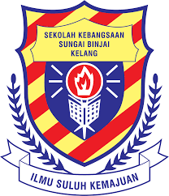

Farhana's Web Resume!
 |
|
 |
|
 |
|
 |
|
 |
|
EDUCATION

UiTM Puncak Perdana
Bachelor of Information Science (Hons) Information System Management
I studied at UiTM Puncak Perdana for 2 semester now, before this i do some research about this course because i have no idea what is this course about. So, here the result of my research of this course, students will learn the components of Information systems, characteristics of hardware, software and telecommunications; types of information systems; networking and the worldwide web and how Information systems is used to promote business objectives and gain competitive advantage. Besides the knowledge in Information systems and management, students are also able to gain the soft skills to meet the challenging and demanding work environment in organizations. Students will engage in developing systems for final year project and also will engage in industrial training to acquire the work experience. The structure of the programme will able to provide the knowledge and the confidence in the students to be ready to work in the globalized working environment.
Negeri Sembilan Matriculation College
Matriculation in Accounting
(2018-2019)
Result - 3.5
2018, I decided to pursue my study at matriculation college in accounting because i think it will give me a lot of benefits, such as i will pursue my degree when my age is 19. Next, i got the course that i really want to learn more about it which is accounting! It is quite tough because i am one of PST student which it means Program Satu Tahun but it worked well with me because of my passion to be an accountant one day. So here, a little bit information of matriculation college, The Malaysian Matriculation Programme (in Malay, Program Matrikulasi Malaysia or more commonly known as just Matrikulasi) is a 1 to 2-year pre-university course that allows you to pursue a degree upon successful completion. Matrikulasi is one of the most sought-after pre-university programmes among Malaysians as it is an extremely cost-effective route into tertiary education. Students only need to pay a small registration fee, and the rest of the costs are borne by the Malaysian government. Matrikulasi students also receive an allowance every semester for their use. Normally, students who opt for Matriculation will go on to pursue their degree with local public institutions. That said, the Malaysian Matriculation is also recognised by several foreign universities such as those from Australia, United Kingdom, Indonesia, New Zealand and several other Commonwealth countries.

Meru Secondary School
SPM - Accounting
(2013-2017)
Result - PT3: 4A, SPM: 5A
I pursue my study at Meru Secondary School which is the best memories i had there. That school teaches me a lot, such as discipline, friendship, responsibilities, respect people and others. I got 4A's for my PT3 and then I take an accounting class as my main subject when i was in form 4, i'm so bad at accounting when i was that age, but I never give up to be an accountant soon, so I worked hard in form 5 and got the title as favourite student from my account teacher because i always score for her subject. Not to forget other subject, i always put my passion and my parents as my motivation when i felt down and i really worked hard in SPM and i proud of myself even my result not that good but im happy to that i achieved my target.

Sungai Binjai Primary School
(2007-2012)
Result - UPSR: 3A 2B
I started my studies as 7 years old girl at this school after i finished my kindergarten life.

CONTACT

011-36292217


© Copyright Version by Siti Nurfarhana Binti Mohd Fuat
Last update: 16 June 2020